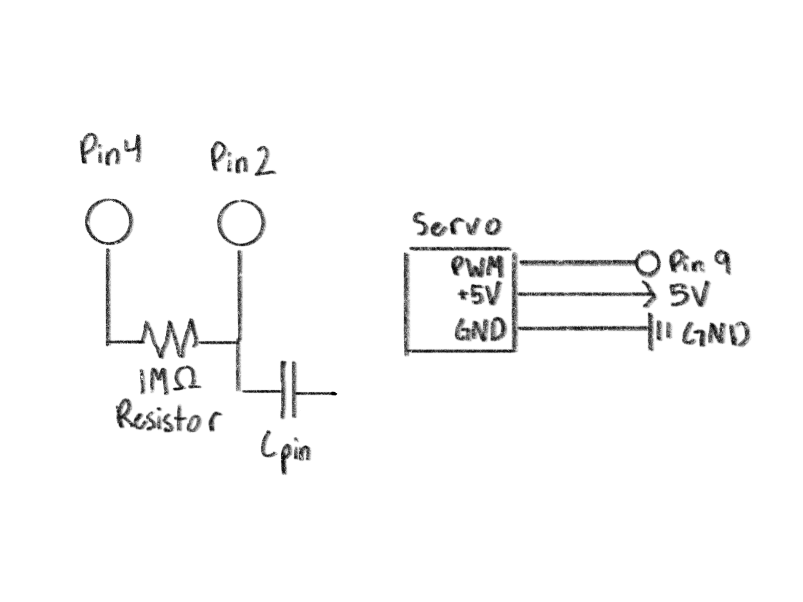
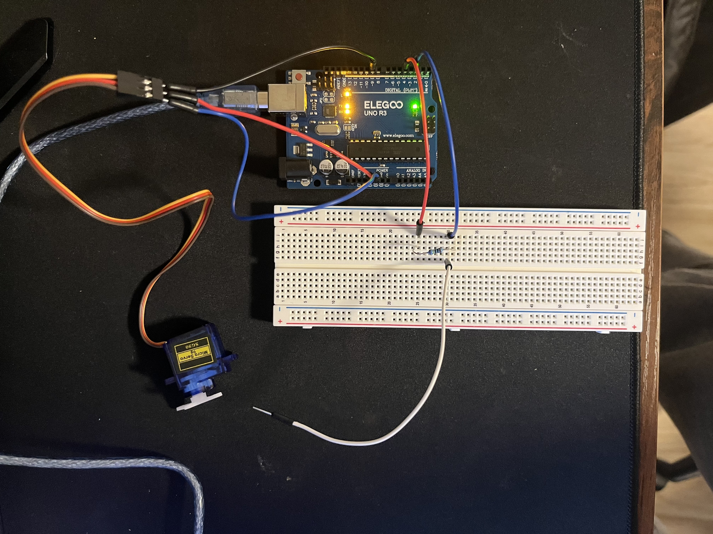
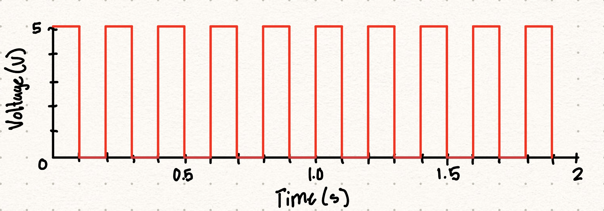

For this project I created a servo motor that moves based off the change in capacitance whenever an object
is touching a compacitive sensor. This uses two libraries, the servo library and the capacitive sensor library.
I have created a schematic below that shows off the project. The capacitive sensor is connected to pins 4(send) and 2(recieve).
There is also a 1M ohm resistor used to control the distance that the capacicitive sensor can detect an object.
The servo motor is connected to pin 9 which is used to control the angle of the motor.

Here is the actual circuit itself. The capacitive sensor is plugged into a breadboard to make it easier to understand.
The servo motor is plugged straight into the breadboard out of convinience.

Here is the code that was used to get the system to work properly. When the sensor is touched it determines the
capacitance and then moves the servo motor. The servo motor will move to a certain angle based off the capacitance.
#include <CapacitiveSensor.h>
#include <Servo.h>
// Sets up servo object
Servo myServo;
// Sets up capacitive sensor object
CapacitiveSensor cs_4_2 = CapacitiveSensor(4,2);
// Minimum value of sensor
int sensorMin = 0;
// Maximum value of sensor
int sensorMax = 1023;
// Initializes sensorValue
int sensorValue = 0;
void setup() {
// Sets data transfer rate
Serial.begin(9600);
// Sets up servo output
myServo.attach(9);
// Gives us a start up time to calibrate
// External Source: https://docs.arduino.cc/built-in-examples/analog/Calibration/
while (millis() < 5000) {
// Reads output from capacitive sensor
long sensorValue = cs_4_2.capacitiveSensor(30);
// Used to calibrate max value of sensor
if (sensorValue > sensorMax) {
sensorMax = sensorValue;
}
// Used to calibrate min value of sensor
if (sensorValue < sensorMin) {
sensorMin = sensorValue;
}
}
}
void loop()
{
// Reads output from capacitive sensor
long sensorValue = cs_4_2.capacitiveSensor(30);
// Calibrates previously read max and min values to a range of 0-180
sensorValue = map(sensorValue, sensorMin, sensorMax, 0, 180);
// Gives input value to servo
myServo.write(sensorValue);
// Delay to give servo a chance to move
delay(15);
// Prints whatever is being input into servo
Serial.println(sensorValue);
// delay to limit data to serial port
delay(100);
}
1: Say you are using a servo motor you attach to pin 9. In your loop() you have the following code:
for (int i=0, i<180, i++){servo.write(i); delay(100);} Draw a graph with the X axis in seconds, for two seconds
, and the y-axis the voltage at pin 9 with respect to ground.

2: Your input device is slightly broken,
leading it to give us an erroneous reading 1% of the time.
How can we address this? Answer in (pseudo)code.
While in first few seconds of setup
store lowest value
store highest value
Map output from device to be from the stored min and max values to a range of reasonable numbers
3: Your input device is slightly noisy, leading the measurement to randomly deviate
from the true measurement up or down by 10%. How can we address this? Answer in (pseudo)code.
For every 10 readings
Take average of values
Make output average of values